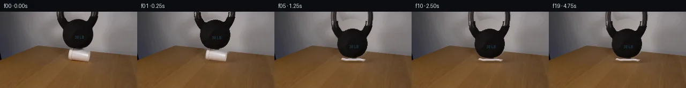

![首帧]()

Round 00
2026-11-05T20:05:59.073292+00:00像素候选变化代码 +202/−0inspection 更新
pixels 4a6b03f848b24e0d · code 9c596ba4f18a4803
查看本轮 generate.py 真实 diff
--- previous/generate.py
+++ current/generate.py
@@ -0,0 +1,202 @@
+"""Local source-pixel animation of a kettlebell crushing a foam cup."""
+from pathlib import Path
+import json
+import cv2
+import numpy as np
+from PIL import Image, ImageDraw
+from artifact_io import save
+
+ROOT = Path(__file__).resolve().parent
+H, W = 144, 256
+SOURCE = np.array(Image.open(ROOT / 'first_frame.png').convert('RGB'))
+Y, X = np.mgrid[:H, :W].astype(np.float32)
+
+
+def polygon_mask(points, size=(W, H)):
+ scale = 4
+ im = Image.new('L', (size[0] * scale, size[1] * scale))
+ ImageDraw.Draw(im).polygon([(round(x * scale), round(y * scale)) for x, y in points], fill=255)
+ return np.asarray(im.resize(size, Image.Resampling.LANCZOS), dtype=np.float32) / 255
+
+
+def composite(base, colors, alpha):
+ return base * (1 - alpha[..., None]) + colors * alpha[..., None]
+
+
+def build_assets():
+ # Segment the dark connected bell, retaining small enclosed label/highlight regions.
+ lum = SOURCE.mean(axis=2)
+ seed = ((lum < 66) & (X >= 103) & (X <= 186) & (Y <= 70)).astype(np.uint8)
+ _, labels, stats, _ = cv2.connectedComponentsWithStats(seed)
+ component = int(labels[45, 145])
+ core = (labels == component).astype(np.uint8)
+ contours, hierarchy = cv2.findContours(core, cv2.RETR_CCOMP, cv2.CHAIN_APPROX_SIMPLE)
+ binary = np.zeros_like(core)
+ for i, contour in enumerate(contours):
+ if hierarchy[0, i, 3] < 0:
+ cv2.drawContours(binary, [contour], -1, 1, -1)
+ for i, contour in enumerate(contours):
+ if hierarchy[0, i, 3] >= 0 and cv2.contourArea(contour) > 100:
+ cv2.drawContours(binary, [contour], -1, 0, -1)
+ # Edge pixels receive fractional coverage; source detail inside remains intact.
+ bell_alpha = cv2.GaussianBlur(binary.astype(np.float32), (3, 3), 0.40)
+ cup_alpha = polygon_mask([(129, 69.8), (136, 71.3), (150, 73), (168.3, 75),
+ (167.2, 83), (165, 93.8), (129.5, 91.3),
+ (126.9, 89), (127.3, 78), (128.4, 72)])
+
+ # Fit a smooth wall illumination field using only visible source-wall samples.
+ edge = 64 + (X - 85) * 18 / 170
+ visible = ((X >= 80) & (X <= 214) & (Y < edge - 2) &
+ (cv2.dilate(binary, np.ones((9, 9), np.uint8)) == 0))
+ xx = (X - 145) / 70
+ yy = (Y - 35) / 40
+ terms = [xx ** i * yy ** j for degree in range(5)
+ for i in range(degree + 1) for j in [degree - i]]
+ design = np.stack(terms, axis=-1)
+ coefficients = np.linalg.lstsq(design[visible], SOURCE[visible].astype(float), rcond=None)[0]
+ wall = np.clip(design @ coefficients, 0, 255).astype(np.float32)
+
+ # Reconstruct the small occluded table area with nearby wood pixels, preserving
+ # the visible rear edge. Inpainting is a local pixel operation, not a model.
+ erase = ((cup_alpha > .01) | (binary > 0) |
+ ((X > 125) & (X < 173) & (Y > 89) & (Y < 97))).astype(np.uint8)
+ erase = cv2.dilate(erase, np.ones((3, 3), np.uint8))
+ inp = cv2.inpaint(SOURCE, erase * 255, 5, cv2.INPAINT_TELEA).astype(np.float32)
+ wall_weight = np.clip((edge + .1 - Y) / 1.3 + .5, 0, 1)
+ replacement = composite(inp, wall, wall_weight)
+ erase_alpha = cv2.GaussianBlur(erase.astype(np.float32), (5, 5), .65)
+ background = composite(SOURCE.astype(np.float32), replacement, erase_alpha)
+
+ # Extend the two cropped handle shafts above the source. The top of the loop
+ # remains outside the frame even after descent. Visible original pixels are copied.
+ pad = 24
+ bell_rgb = np.zeros((H + pad, W, 3), np.float32)
+ bell_a = np.zeros((H + pad, W), np.float32)
+ bell_rgb[pad:] = SOURCE
+ bell_a[pad:] = bell_alpha
+ for row in range(pad):
+ sy = row - pad
+ curve = ((sy + 9) / 43) ** 2
+ outer = 39.5 * np.sqrt(max(0, 1 - curve))
+ inner = 29.6 * np.sqrt(max(0, 1 - curve))
+ for sign, left0, right0 in [(-1, 105.5, 116), (1, 173.0, 183.1)]:
+ if sign < 0:
+ left, right = 144.4 - outer, 144.4 - inner
+ else:
+ left, right = 144.4 + inner, 144.4 + outer
+ coverage = np.minimum(X[0] - left + .5, right - X[0] + .5).clip(0, 1)
… diff truncated; 115 more lines …